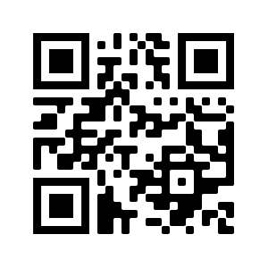

DESAFIOS

Para baixar a carteirinha basta entrar no APP DA VITÓRIA usando usuário número do NIS e a senha seu CPF, pedir para baixar
Agilidade no acesso as informações
Como a carteirinha fica gravada no telefone do acampado, você e o movimento não precisa se preocupar com a perda dela.
Custa caro carimbar uma carteirinha, especialmente se elas são propensas a ser perdidas ou roubadas.
